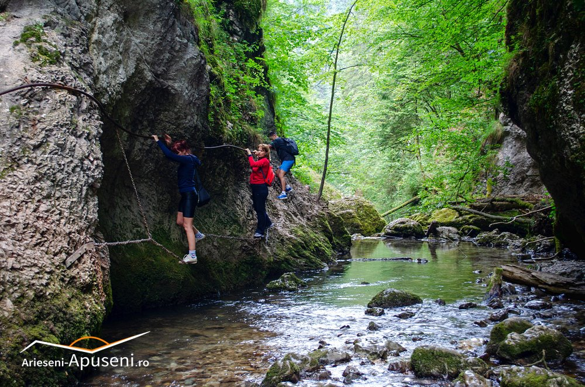
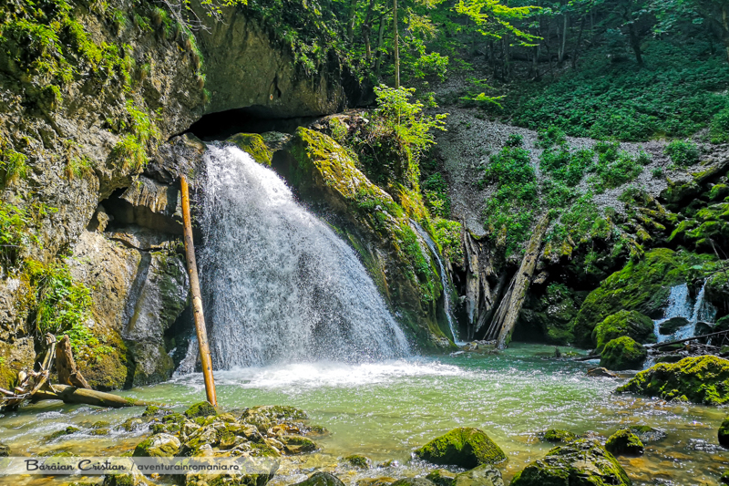
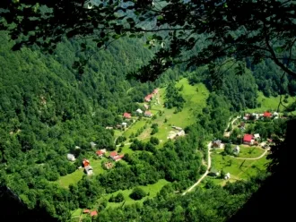

Valea Aleului
Valea Aleului este una dintre cele mai pitorești și liniștite văi din zona Pietroasa. Drumul șerpuiește pe lângă pârâul cu apă limpede și rece, fiind înconjurat de păduri dese de fag și molid. Este locul perfect pentru cei care vor să scape de zgomotul orașului și să se bucure de aerul curat de munte, fără a depune un efort fizic extrem.
Drumeții accesibile și relaxare
Datorită pantei domoale, traseul de pe Valea Aleului este accesibil tuturor categoriilor de turiști, inclusiv familiilor cu copii. Pe parcurs, vei întâlni mici cascade, poienițe ideale pentru un picnic și puncte de belvedere asupra crestelor împădurite. Toamna, valea se transformă într-un spectacol de culori arămii, fiind un paradis pentru pasionații de fotografie.
Dificultate: Ușoară | Durată: 2 - 3 ore | Recomandat pentru: Familii, plimbări relaxante, fotografie.Circuitul Galbena
Printre pereți verticali de calcar
Circuitul Galbena este considerat unul dintre cele mai frumoase și palpitante trasee din România. Traseul coboară în chei spectaculoase, unde pereții de stâncă par să se unească deasupra ta. Anumite porțiuni sunt echipate cu cabluri și lanțuri fixate în stâncă, oferind o doză sănătoasă de adrenalină în timp ce traversezi chiar pe deasupra apei învolburate.

Minunile sculptate de apă
Punctul culminant al traseului este Cascada Evantai, unde apa iese dintr-un tunel subteran și se prăbușește peste stânci sub forma unui evantai alb de spumă. La fel de impresionant este și Izbucul Galbenei, un lac adânc de culoare smaraldului de unde apa iese la suprafață după un lung parcurs subteran prin peșterile din Padiș.

Dificultate: Medie - Dificilă | Durată: 5 - 6 ore | Echipament obligatoriu: Bocanci cu aderență bună, pelerină de ploaie.Satul de vacanta - Boga
Confort în mijlocul sălbăticiei
Situat la o altitudine de aproximativ 500 de metri, într-o vale îngustă străjuită de versanți abrupți, Satul de vacanță Boga este locul ideal pentru a-ți stabili baza. Aici găsești numeroase cabane din lemn, pensiuni cochete și case de vacanță care îmbină stilul rustic cu confortul modern. Seara, atmosfera devine magică, cu focuri de tabără și cerul plin de stele.

Baza perfectă pentru exploratori
Pe lângă relaxare, Boga este o poartă strategică spre cele mai faimoase obiective din Apuseni. De aici pornesc trasee marcate către Platoul Padiș, Cetățile Ponorului, Pietrele Boghii (de unde ai o panoramă uluitoare asupra întregii văi) și Cascada Oselu, aflată chiar la marginea satului.
Acces: Drum asfaltat din Pietroasa | Facilități: Pensiuni, cabane, zone de camping, semnal mobil limitat (perfect pentru deconectare).